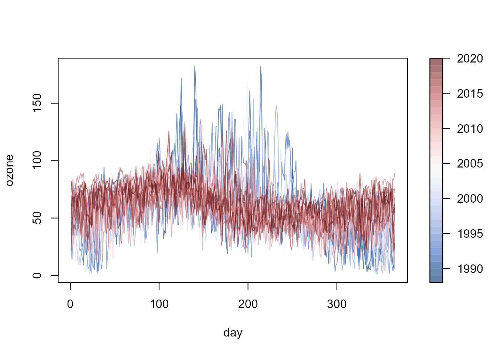
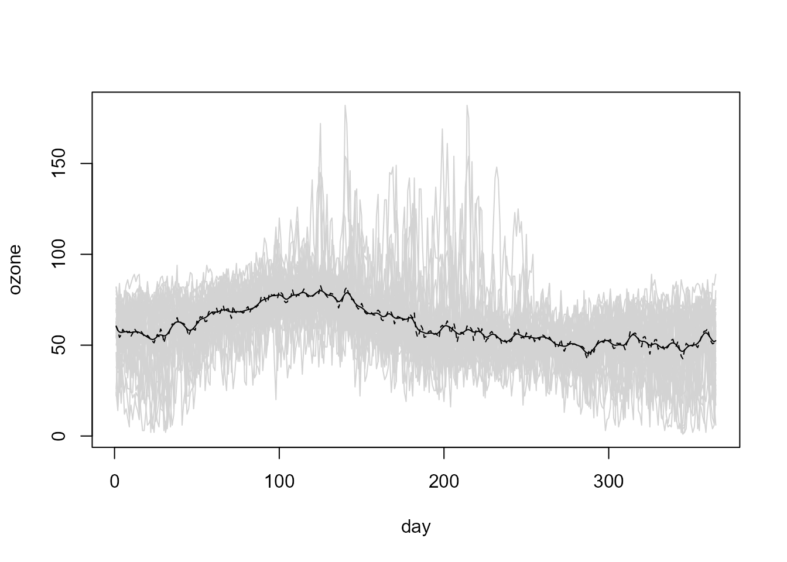

Introduction to the npfda Package
Ruben Fernandez-Casal (ruben.fcasal@udc.es)
npfda 0.1.3
Source:vignettes/npfda.Rmd
npfda.RmdThis vignette (a working draft) tries to illustrate the use of the
npfda (Nonparametric functional data analysis) package.
This package implements nonparametric methods for inference on
functional processes, avoiding the misspecification problems that may
arise when using parametric models.
Introduction
## Loading required package: npsp## Package npsp: Nonparametric Spatial Statistics,
## version 0.7-12 (built on 2023-05-05).
## Copyright (C) R. Fernandez-Casal 2012-2023.
## Type `help(npsp)` for an overview of the package or
## visit https://rubenfcasal.github.io/npsp.## npfda: Nonparametric functional data analysis,
## version 0.1.3 (built on 2023-05-12).The ozone data set, supplied with the npfda
package, will be used in the examples in this document. The data consist
of daily averages of ozone concentration (microgram per cubic meter)
recorded over the period from 1988 to 2020 at the Yarner Wood AURN
monitoring site in the UK.
fd <- npf.data(ozone, dimnames = "day")
plot(fd, y = as.numeric(fd$ynames))
plot(fd, y = as.numeric(fd$ynames),
col = hcl.colors(32, palette = "Blue-Red 3", alpha = 0.6))For example, continuing with the exploratory graphical analysis, we can plot the functional mean of the sample and this mean plus and minus one sample standard deviation as a reference of the variability of the data:
Trend estimation
The linear Local trend estimates can be computed using the
locpol() generic function:
trend.h <- 36
lp <- locpol(fd, h = trend.h)
# Plot
plot(fd, col = "lightgray", legend = FALSE)
lines(lp$data$x, lp$biny, lty = 2) # x = coords(fd)
lines(lp$data$x, lp$est)The smoothing procedures in npfda (following
npsp package) use binning to aggregate the data. For
instance, instead of the previous code we can use:
bin <- npf.binning(fd) # binning
lp <- locpol(bin, h = trend.h)Bandwidth selection
The trend estimates depends crucially on the bandwidth matrix \(h\). A small bandwidth will produce undersmoothed estimates, whereas a big bandwidth will oversmooth the data. Although it may be subjectively choosed by eye, it could be very beneficial to have automatic selection criteria from the data.
The bandwidth can be selected through the h.cv()
function. Traditional bandwidth selectors, such as cross validation (CV)
or generalized cross validation (GCV), do not have a good performance
for dependent data (Opsomer et al, 2001), since they tend to undersmooth
the data. By default the modified cross-validation criteria (MCV; Chu
and Marron, 1991) is used, by ignoring observations in a neighborhood
\(N(j)\) around \(t_j\). Note that the ordinary CV approach
is a particular case with \(N(j)=\left\lbrace
t_{j} \right\rbrace\).
For instance (implicitly assuming ):
# bin <- npf.binning(fd)
trend.h.cv <- h.cv(bin)$h
trend.h.cv## [,1]
## [1,] 4.947342Nevertheless, as independence and homoscedasticity was implicitly assumed, the selected bandwidth seems to undersmooth the data:
# Linear Local trend estimates
lp.cv <- locpol(bin, h = trend.h.cv)
# Plot
with(lp.cv, {
plot(data, col = "lightgray", legend = FALSE)
lines(data$x, biny, lty = 2)
lines(data$x, est)
})
An alternative is the corrected generalized cross-validation criterion (CGCV) that takes the temporal dependence into account, proposed in Francisco-Fernández and Opsomer (2005) for the spatial case. Nevertheless, the modeling of the dependence structure is previously required to use this approach in practice.
Variance estimation
The linear Local variance estimates can be computed using the
np.var() generic function:
var.h <- 33
lp.var <- np.var(lp, h = var.h)
# Plot data + estimated trend -+ estimated std. dev.
plot(lp$data, col = "lightgray", legend = FALSE)
x <- lp$data$x
y <- lp$est
lines(x, y)
matlines(x, y + sqrt(lp.var$est) %o% c(-1, 1), col = 1, lty = 2)The bandwidth can also be selected using the h.cv()
function (assuming independence in this case):
bin.res2 <- npf.bin.res2(lp)
var.h.cv <- h.cv(bin.res2)$h
# the selected bandwidth undersmoothes the squared residuals...
var.h.cv## [,1]
## [1,] 6.941771
# Linear Local variance estimate
lp.cv.var <- np.var(lp, h = var.h.cv)
# Plot data + estimated trend -+ estimated std. dev.
plot(lp$data, col = "lightgray", legend = FALSE)
x <- lp$data$x
y <- lp$est
lines(x, y)
matlines(x, y + sqrt(lp.cv.var$est) %o% c(-1, 1), col = 1, lty = 2)
Variogram estimation
Local linear variogram estimates can be computed with the
np.svar() generic function, in this case from standardized
residuals. Function h.cv() may be used to select the
corresponding bandwidth, minimizing the cross-validation relative
squared error of the semivariogram estimates by default (see
e.g. Fernández-Casal and Francisco-Fernández, 2014). Nevertheless, as
the default criterion does not take into account the dependence between
the sample semivariances, the resulting bandwidth should be increased to
avoid under-smoothing the variogram estimates.
## [,1]
## [1,] 3.712871
svar.np <- np.svar(bin.svar, h = h.svar)
# plot(svar.np)A valid variogram estimate is obtained by fitting a “nonparametric”
isotropic Shapiro-Botha variogram model (Shapiro and Botha, 1991), to
the nonparametric pilot estimates, by using function
npsp::fitsvar.sb.iso().
svm <- fitsvar.sb.iso(svar.np, dk = 0)
plot(svm)Updating the estimates
The selection of optimal bandwidths for trend and variance
approximation, require estimation of the small-scale variability of the
process, leading to a circular problem. To avoid it, an iterative
algorithm could be used.
Starting with initial bandwidths (e.g. obtained by any of the available
methods for independent data). At each iteration, the bandwidths are
selected using the variance and variogram estimates computed in the
previous iteration, and the model components are re-estimated. The
algorithm can be considered to converge when there are no large changes
in the selected bandwidths (which would be due to similar small-scale
variability estimates). In practice, just one iteration of this
algorithm is usually sufficient.
In this case, as the initial bandwidths were purposely set close to their convergence values, a new selection of the bandwidth for the trend estimation:
# Estimated correlation matrix
corr.est <- varcov(svm, lp$data$x)
# Trend bandwidth selection (under heteroscedasticity and dependence)
trend.h.new <- h.cv(bin, lp.var, cor = corr.est)$h
trend.h.new## [,1]
## [1,] 36.37871results in a value almost the same as the initial one:
## [1] 0.01041033and the same happens for the variance estimation:
# Variance bandwidth selection (under heteroscedasticity and dependence)
var.h.new <- h.cv(bin.res2, lp.var, cor = corr.est)$h
var.h.new## [,1]
## [1,] 33.85016## [1] 0.02511527Therefore, it would not be necessary to iterate and we can consider the previous estimates to be the definitive ones.
References
Castillo-Páez, S., Fernández-Casal, R., García-Soidán, P. (2019). A nonparametric bootstrap method for spatial data. Comput. Stat. Data An., 137, 1–15.
Chu, C. K. and Marron, J. S. (1991). Comparison of Two Bandwidth Selectors with Dependent Errors. The Annals of Statistics 19, 1906–1918.
Fan, J. and Gijbels, I. (1996). Local polynomial modelling and its applications. Chapman & Hall, London.
Fernández-Casal, R. (2023). npsp: Nonparametric Spatial Statistics. R package version 0.7-12. https://github.com/rubenfcasal/npsp.
Fernández-Casal R, Francisco-Fernández M (2014) Nonparametric bias-corrected variogram estimation under non-constant trend, Stoch. Environ. Res. Ris. Assess., 28, 1247-1259, DOI.
Francisco-Fernández, M. and Opsomer, J. D. (2005). Smoothing parameter selection methods for nonparametric regression with spatially correlated errors. The Canadian Journal of Statistics 33, 279–295.
Opsomer, J. D., Wang, Y. and Yang, Y. (2001). Nonparametric regression with correlated errors. Statistical Science 16, 134–153.
Shapiro, A. and Botha, J.D. (1991). Variogram fitting with a general class of conditionally non-negative definite functions. Computational Statistics and Data Analysis 11, 87–96.